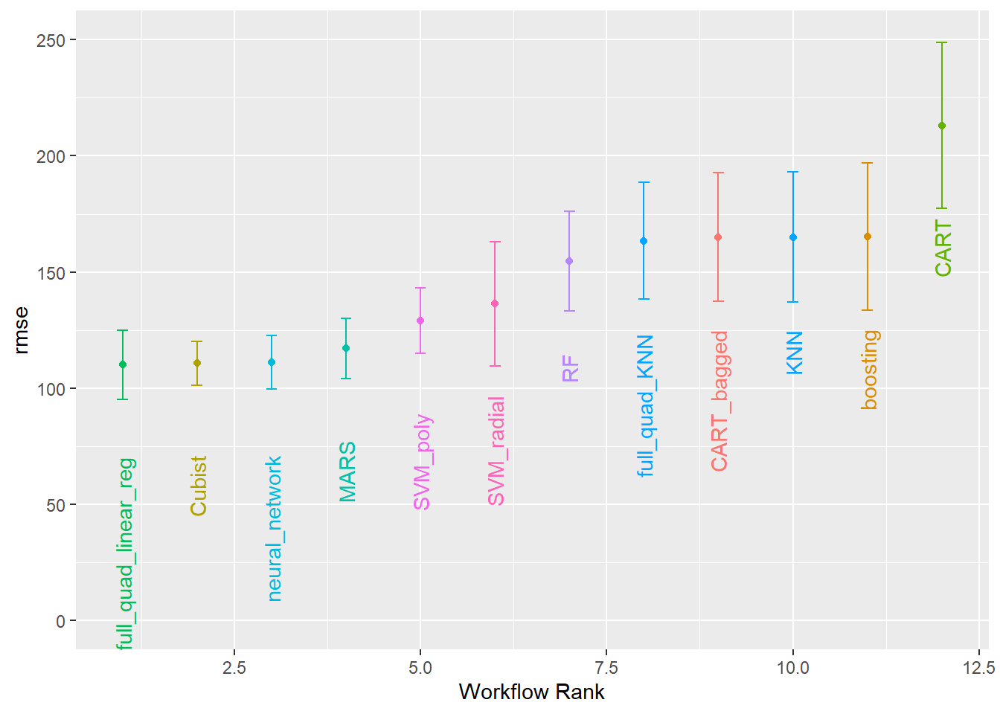
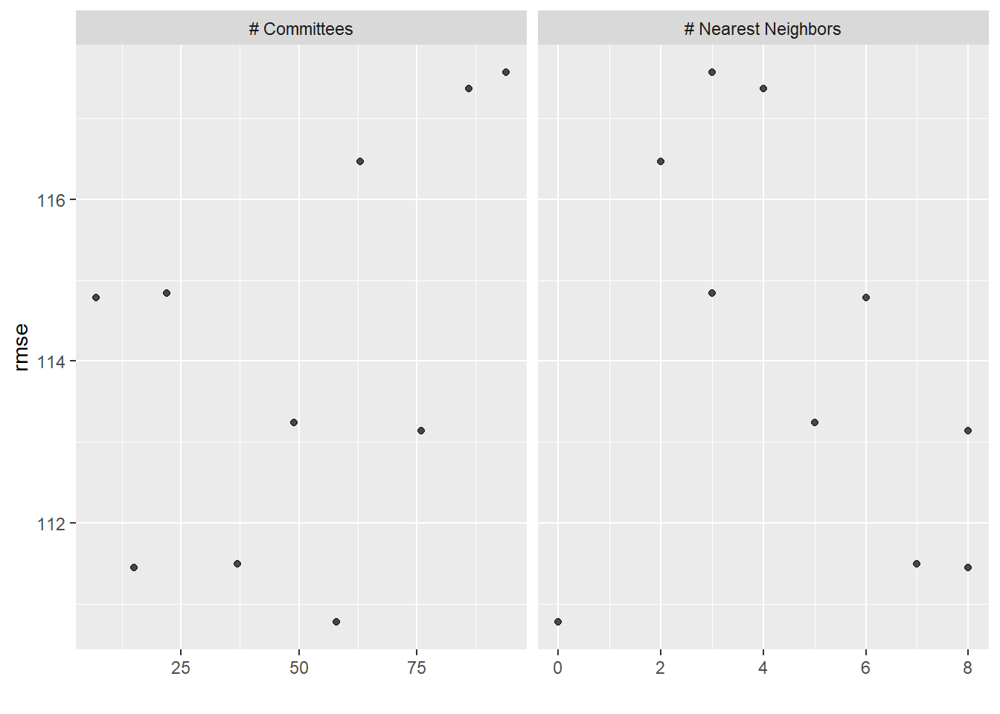
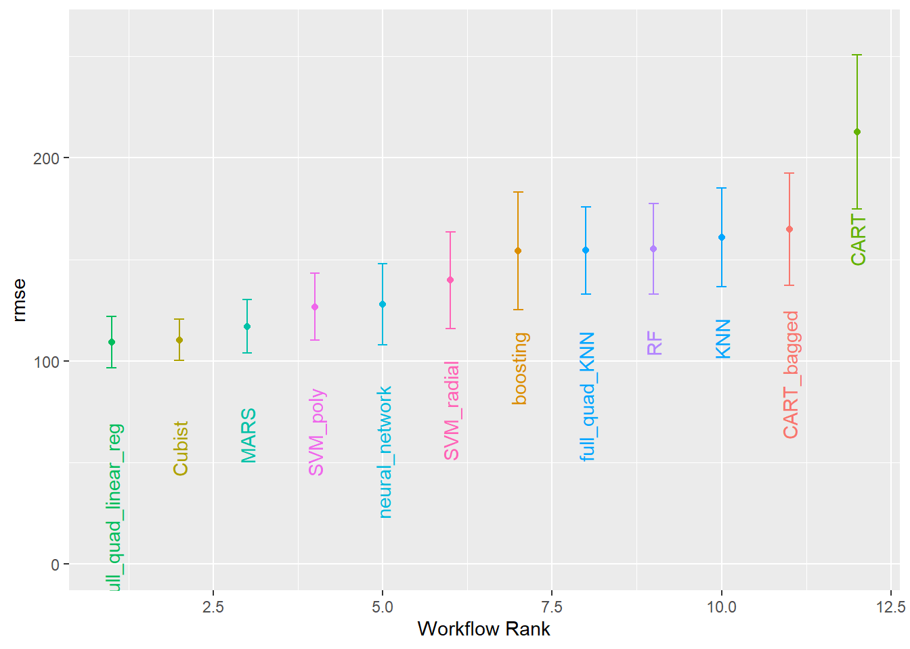
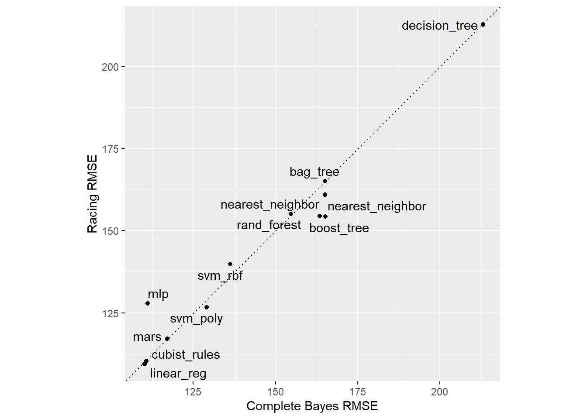
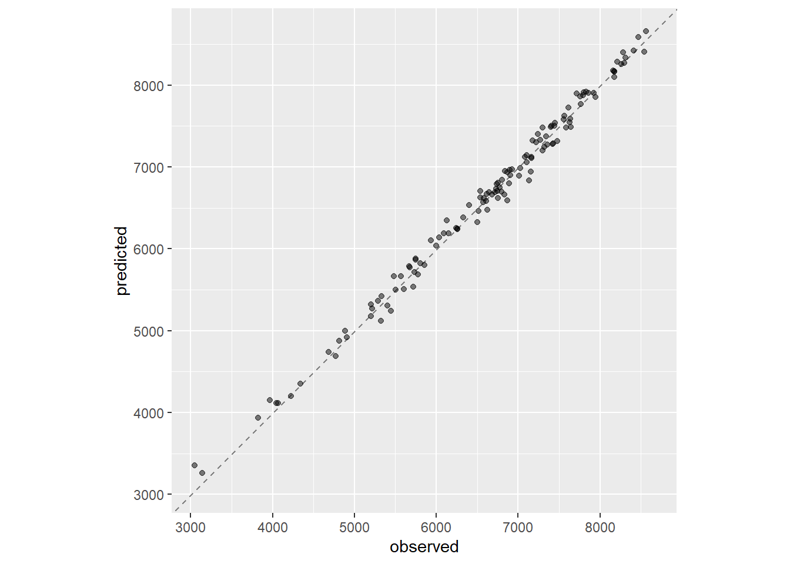
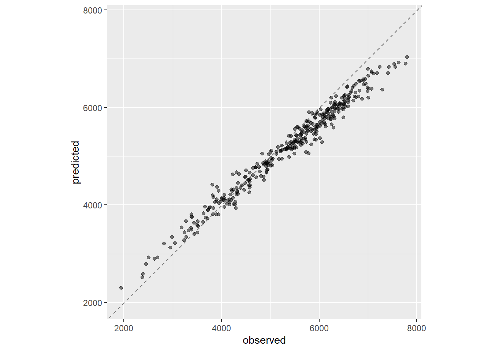
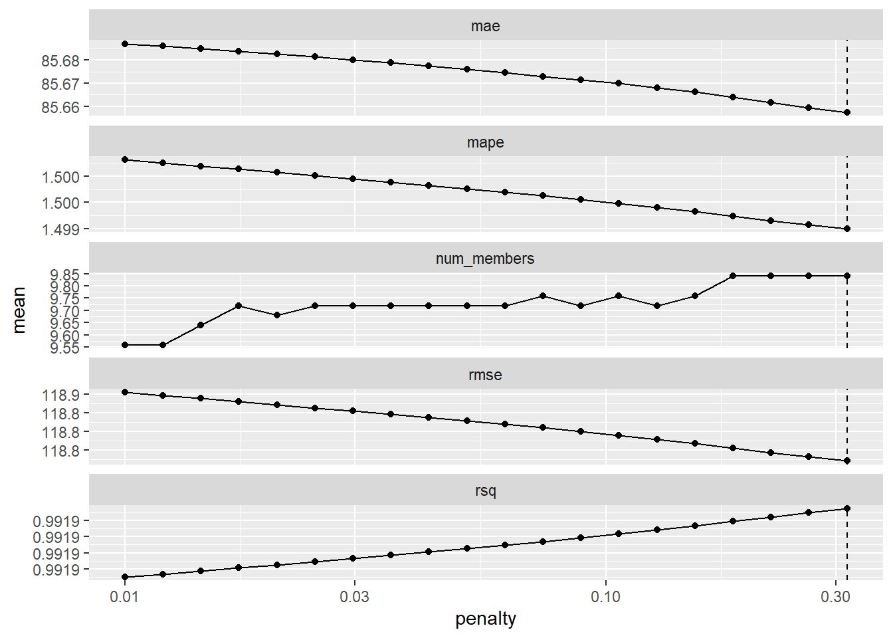
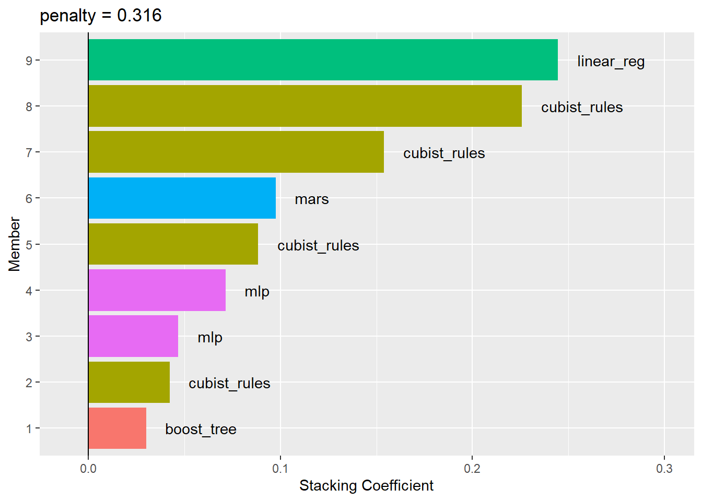
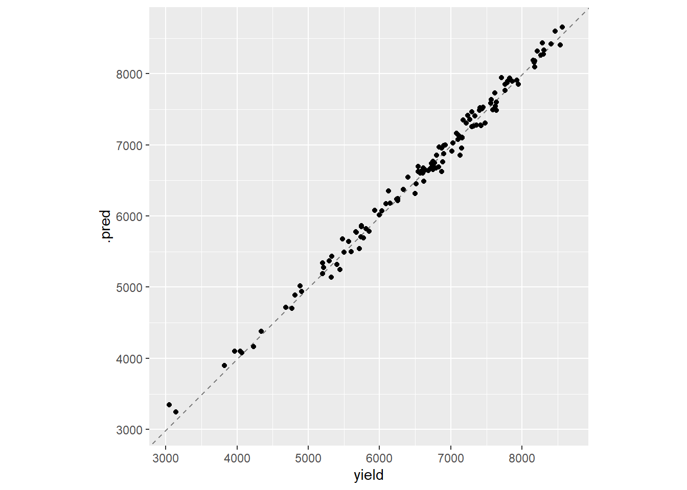
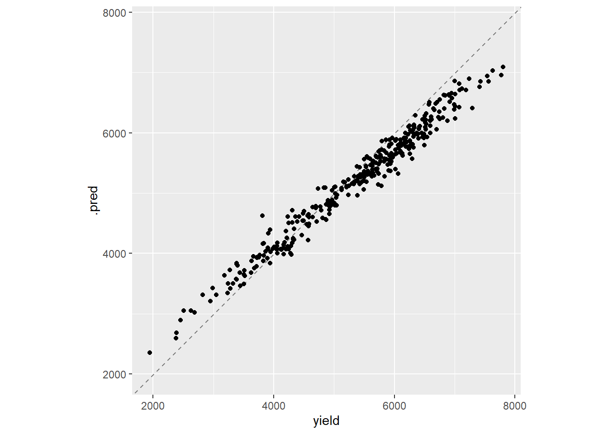

4 Revisión de muchos modelos y Ensamblado de modelos en tidymodels.
Caso: Plant spatial traits, bee species composition, and weather conditions dataset for wild blueberry yield prediction through computer simulation modeling and machine learning algorithms (Obsie & Drummond, 2020)
4.1 Modelamiento del rendimiento del arándano silvestre.
En este caso, solo trabajaré con las tres variables más importantes que se han hallado en el Modelamiento en tidymodels con el motor ranger.
4.1.1 Recetas de preprocesamiento
Para evitar errores, las recetas de preprocesamiento no deben de incluir pasos de selección de variables.
### Recipe ----
data_rec <- recipe(formula = `yield` ~ .,
x = data_train) %>%
step_mutate_at(where(base::is.numeric),
-contains(c("yield",
"fruitset",
"fruitmass")),
fn = ~log(.))
normalized_rec <-
data_rec %>%
step_normalize(all_predictors())
poly_recipe <-
normalized_rec %>%
step_poly(all_predictors()) %>%
step_interact(~ all_predictors():all_predictors())4.1.2 Especificación de los modelos
En este paso, especificamos todos los modelos a probar.
linear_reg_spec <-
linear_reg(penalty = tune(), mixture = tune()) %>%
set_engine("glmnet")
nnet_spec <-
mlp(hidden_units = tune(), penalty = tune(), epochs = tune()) %>%
set_engine("nnet", MaxNWts = 2600) %>%
set_mode("regression")
mars_spec <-
mars(prod_degree = tune()) %>% #<- use GCV to choose terms
set_engine("earth") %>%
set_mode("regression")
svm_r_spec <-
svm_rbf(cost = tune(), rbf_sigma = tune()) %>%
set_engine("kernlab") %>%
set_mode("regression")
svm_p_spec <-
svm_poly(cost = tune(), degree = tune()) %>%
set_engine("kernlab") %>%
set_mode("regression")
knn_spec <-
nearest_neighbor(neighbors = tune(), dist_power = tune(), weight_func = tune()) %>%
set_engine("kknn") %>%
set_mode("regression")
cart_spec <-
decision_tree(cost_complexity = tune(), min_n = tune()) %>%
set_engine("rpart") %>%
set_mode("regression")
bag_cart_spec <-
bag_tree() %>%
set_engine("rpart", times = 50L) %>%
set_mode("regression")
rf_spec <-
rand_forest(mtry = tune(), min_n = tune(), trees = 1000) %>%
set_engine("ranger") %>%
set_mode("regression")
xgb_spec <-
boost_tree(tree_depth = tune(), learn_rate = tune(), loss_reduction = tune(),
min_n = tune(), sample_size = tune(), trees = tune()) %>%
set_engine("xgboost") %>%
set_mode("regression")
cubist_spec <-
cubist_rules(committees = tune(), neighbors = tune()) %>%
set_engine("Cubist")4.1.3 Extraer el conjunto de hiperparámetros de la red neuronal monocapa
En el caso de la red neuronal monocapa, fue necesario crear una especificación del hiperparámetro del número de unidades ocultas.
nnet_param <-
nnet_spec %>%
extract_parameter_set_dials() %>%
update(hidden_units = hidden_units(range = c(1L, 27L)))4.1.4 Creación del conjunto de flujos de trabajo
En este caso, es necesario especificar qué receta de preprocesamiento se aplica a cada modelo. Puede aplicarse más de una receta por modelo, considerando que cada interacción de receta y modelo creará un algoritmo único.
normalized <-
workflow_set(
preproc = list(normalized = normalized_rec),
models = list(SVM_radial = svm_r_spec, SVM_poly = svm_p_spec,
KNN = knn_spec, neural_network = nnet_spec)
)
normalized# A workflow set/tibble: 4 × 4
wflow_id info option result
<chr> <list> <list> <list>
1 normalized_SVM_radial <tibble [1 × 4]> <opts[0]> <list [0]>
2 normalized_SVM_poly <tibble [1 × 4]> <opts[0]> <list [0]>
3 normalized_KNN <tibble [1 × 4]> <opts[0]> <list [0]>
4 normalized_neural_network <tibble [1 × 4]> <opts[0]> <list [0]>normalized %>% extract_workflow(id = "normalized_KNN")══ Workflow ════════════════════════════════════════════════════════════════════
Preprocessor: Recipe
Model: nearest_neighbor()
── Preprocessor ────────────────────────────────────────────────────────────────
2 Recipe Steps
• step_mutate_at()
• step_normalize()
── Model ───────────────────────────────────────────────────────────────────────
K-Nearest Neighbor Model Specification (regression)
Main Arguments:
neighbors = tune()
weight_func = tune()
dist_power = tune()
Computational engine: kknn normalized <-
normalized %>%
option_add(param_info = nnet_param, id = "normalized_neural_network")
normalized# A workflow set/tibble: 4 × 4
wflow_id info option result
<chr> <list> <list> <list>
1 normalized_SVM_radial <tibble [1 × 4]> <opts[0]> <list [0]>
2 normalized_SVM_poly <tibble [1 × 4]> <opts[0]> <list [0]>
3 normalized_KNN <tibble [1 × 4]> <opts[0]> <list [0]>
4 normalized_neural_network <tibble [1 × 4]> <opts[1]> <list [0]>simple_pre_proc <-
workflow_set(
preproc = list(simple = data_rec),
models = list(MARS = mars_spec, CART = cart_spec, CART_bagged = bag_cart_spec,
RF = rf_spec, boosting = xgb_spec, Cubist = cubist_spec)
)
simple_pre_proc# A workflow set/tibble: 6 × 4
wflow_id info option result
<chr> <list> <list> <list>
1 simple_MARS <tibble [1 × 4]> <opts[0]> <list [0]>
2 simple_CART <tibble [1 × 4]> <opts[0]> <list [0]>
3 simple_CART_bagged <tibble [1 × 4]> <opts[0]> <list [0]>
4 simple_RF <tibble [1 × 4]> <opts[0]> <list [0]>
5 simple_boosting <tibble [1 × 4]> <opts[0]> <list [0]>
6 simple_Cubist <tibble [1 × 4]> <opts[0]> <list [0]>with_features <-
workflow_set(
preproc = list(full_quad = poly_recipe),
models = list(linear_reg = linear_reg_spec, KNN = knn_spec)
)all_workflows <-
bind_rows(simple_pre_proc, normalized, with_features) %>%
# Make the workflow ID's a little more simple:
mutate(wflow_id = gsub("(simple_)|(normalized_)", "", wflow_id))
all_workflows# A workflow set/tibble: 12 × 4
wflow_id info option result
<chr> <list> <list> <list>
1 MARS <tibble [1 × 4]> <opts[0]> <list [0]>
2 CART <tibble [1 × 4]> <opts[0]> <list [0]>
3 CART_bagged <tibble [1 × 4]> <opts[0]> <list [0]>
4 RF <tibble [1 × 4]> <opts[0]> <list [0]>
5 boosting <tibble [1 × 4]> <opts[0]> <list [0]>
6 Cubist <tibble [1 × 4]> <opts[0]> <list [0]>
7 SVM_radial <tibble [1 × 4]> <opts[0]> <list [0]>
8 SVM_poly <tibble [1 × 4]> <opts[0]> <list [0]>
9 KNN <tibble [1 × 4]> <opts[0]> <list [0]>
10 neural_network <tibble [1 × 4]> <opts[1]> <list [0]>
11 full_quad_linear_reg <tibble [1 × 4]> <opts[0]> <list [0]>
12 full_quad_KNN <tibble [1 × 4]> <opts[0]> <list [0]>4.1.5 Ajuste y evaluación de los modelos
Primero, probaremos con la calibración bayesiana de hiperparámetros. En aquellos algoritmos donde no es necesario calibrar hiperparámetros, se prueba un ajuste por defecto en cada folio.
bayes_ctrl <-
control_bayes(
# El corte entero para el número de iteraciones sin mejores resultados.
no_improve = 10,
extract = identity,
save_pred = TRUE,
verbose = TRUE,
parallel_over = "everything"
)
full_results_time <-
system.time(
bayes_results <-
all_workflows %>%
workflow_map(seed = 1503,
resamples = data_folds,
initial = 5,
iter = 50,
metrics = multi_met,
control = bayes_ctrl,
verbose = TRUE)
)i 1 of 12 tuning: MARSWarning: The `...` are not used in this function but one or more objects were
passed: 'initial', 'iter'✔ 1 of 12 tuning: MARS (23.9s)i 2 of 12 tuning: CARTWarning: The `...` are not used in this function but one or more objects were
passed: 'initial', 'iter'✔ 2 of 12 tuning: CART (47s)i No tuning parameters. `fit_resamples()` will be attemptedi 3 of 12 resampling: CART_bagged✔ 3 of 12 resampling: CART_bagged (1m 6s)i 4 of 12 tuning: RFWarning: The `...` are not used in this function but one or more objects were
passed: 'initial', 'iter'i Creating pre-processing data to finalize unknown parameter: mtry✔ 4 of 12 tuning: RF (1m 8.1s)i 5 of 12 tuning: boostingWarning: The `...` are not used in this function but one or more objects were
passed: 'initial', 'iter'✔ 5 of 12 tuning: boosting (1m 28.5s)i 6 of 12 tuning: CubistWarning: The `...` are not used in this function but one or more objects were
passed: 'initial', 'iter'✔ 6 of 12 tuning: Cubist (1m 3s)i 7 of 12 tuning: SVM_radialWarning: The `...` are not used in this function but one or more objects were
passed: 'initial', 'iter'✔ 7 of 12 tuning: SVM_radial (35.5s)i 8 of 12 tuning: SVM_polyWarning: The `...` are not used in this function but one or more objects were
passed: 'initial', 'iter'✔ 8 of 12 tuning: SVM_poly (18.5s)i 9 of 12 tuning: KNNWarning: The `...` are not used in this function but one or more objects were
passed: 'initial', 'iter'✔ 9 of 12 tuning: KNN (17.8s)i 10 of 12 tuning: neural_networkWarning: The `...` are not used in this function but one or more objects were
passed: 'initial', 'iter'✔ 10 of 12 tuning: neural_network (21.4s)i 11 of 12 tuning: full_quad_linear_regWarning: The `...` are not used in this function but one or more objects were
passed: 'initial', 'iter'✔ 11 of 12 tuning: full_quad_linear_reg (20.2s)i 12 of 12 tuning: full_quad_KNNWarning: The `...` are not used in this function but one or more objects were
passed: 'initial', 'iter'✔ 12 of 12 tuning: full_quad_KNN (23.3s)bayes_results# A workflow set/tibble: 12 × 4
wflow_id info option result
<chr> <list> <list> <list>
1 MARS <tibble [1 × 4]> <opts[5]> <tune[+]>
2 CART <tibble [1 × 4]> <opts[5]> <tune[+]>
3 CART_bagged <tibble [1 × 4]> <opts[5]> <rsmp[+]>
4 RF <tibble [1 × 4]> <opts[5]> <tune[+]>
5 boosting <tibble [1 × 4]> <opts[5]> <tune[+]>
6 Cubist <tibble [1 × 4]> <opts[5]> <tune[+]>
7 SVM_radial <tibble [1 × 4]> <opts[5]> <tune[+]>
8 SVM_poly <tibble [1 × 4]> <opts[5]> <tune[+]>
9 KNN <tibble [1 × 4]> <opts[5]> <tune[+]>
10 neural_network <tibble [1 × 4]> <opts[6]> <tune[+]>
11 full_quad_linear_reg <tibble [1 × 4]> <opts[5]> <tune[+]>
12 full_quad_KNN <tibble [1 × 4]> <opts[5]> <tune[+]>El siguiente resultado rankea u ordena los resultados de los algoritmos en validación cruzada según el rmse.
bayes_results %>%
rank_results() %>%
filter(.metric == "rmse") %>%
select(model, .config, rmse = mean, rank)# A tibble: 103 × 4
model .config rmse rank
<chr> <chr> <dbl> <int>
1 linear_reg Preprocessor1_Model08 110. 1
2 linear_reg Preprocessor1_Model04 110. 2
3 linear_reg Preprocessor1_Model05 111. 3
4 linear_reg Preprocessor1_Model03 111. 4
5 linear_reg Preprocessor1_Model06 111. 5
6 cubist_rules Preprocessor1_Model06 111. 6
7 mlp Preprocessor1_Model01 111. 7
8 cubist_rules Preprocessor1_Model02 111. 8
9 cubist_rules Preprocessor1_Model04 111. 9
10 linear_reg Preprocessor1_Model10 112. 10
# … with 93 more rowsSe puede imprimir los resultados globales a continuación.
autoplot(
bayes_results,
rank_metric = "rmse", # <- how to order models
metric = "rmse", # <- which metric to visualize
select_best = TRUE # <- one point per workflow
) +
geom_text(aes(y = mean - 40, label = wflow_id), angle = 90, hjust = 1) +
lims(y = c(0, 250)) +
theme(legend.position = "none")
O por cada algoritmo probado, especificándolo.
autoplot(bayes_results, id = "Cubist", metric = "rmse")
4.1.6 Selección eficaz de los modelos
Para stacking es recomendable usar la búsqueda eficiente de cuadrículas mediante carreras con modelos ANOVA.
race_ctrl <-
control_race(
save_pred = TRUE,
parallel_over = "everything",
save_workflow = TRUE,
verbose = TRUE
)
full_race_results_time <-
system.time(
race_results <-
all_workflows %>%
workflow_map(
"tune_race_anova",
seed = 1503,
resamples = data_folds,
grid = 25,
control = race_ctrl,
verbose = TRUE,
metrics = multi_met)
)i 1 of 12 tuning: MARS✔ 1 of 12 tuning: MARS (12.9s)i 2 of 12 tuning: CART✔ 2 of 12 tuning: CART (26.5s)i No tuning parameters. `fit_resamples()` will be attemptedi 3 of 12 resampling: CART_bagged✔ 3 of 12 resampling: CART_bagged (21s)i 4 of 12 tuning: RFi Creating pre-processing data to finalize unknown parameter: mtry✔ 4 of 12 tuning: RF (42.5s)i 5 of 12 tuning: boosting✔ 5 of 12 tuning: boosting (54.2s)i 6 of 12 tuning: Cubist✔ 6 of 12 tuning: Cubist (55.3s)i 7 of 12 tuning: SVM_radial✔ 7 of 12 tuning: SVM_radial (21.6s)i 8 of 12 tuning: SVM_poly✔ 8 of 12 tuning: SVM_poly (38.5s)i 9 of 12 tuning: KNN✔ 9 of 12 tuning: KNN (51.2s)i 10 of 12 tuning: neural_network✔ 10 of 12 tuning: neural_network (57.8s)i 11 of 12 tuning: full_quad_linear_reg✔ 11 of 12 tuning: full_quad_linear_reg (55.2s)i 12 of 12 tuning: full_quad_KNN✔ 12 of 12 tuning: full_quad_KNN (52.1s)race_results# A workflow set/tibble: 12 × 4
wflow_id info option result
<chr> <list> <list> <list>
1 MARS <tibble [1 × 4]> <opts[4]> <race[+]>
2 CART <tibble [1 × 4]> <opts[4]> <race[+]>
3 CART_bagged <tibble [1 × 4]> <opts[4]> <rsmp[+]>
4 RF <tibble [1 × 4]> <opts[4]> <race[+]>
5 boosting <tibble [1 × 4]> <opts[4]> <race[+]>
6 Cubist <tibble [1 × 4]> <opts[4]> <race[+]>
7 SVM_radial <tibble [1 × 4]> <opts[4]> <race[+]>
8 SVM_poly <tibble [1 × 4]> <opts[4]> <race[+]>
9 KNN <tibble [1 × 4]> <opts[4]> <race[+]>
10 neural_network <tibble [1 × 4]> <opts[5]> <race[+]>
11 full_quad_linear_reg <tibble [1 × 4]> <opts[4]> <race[+]>
12 full_quad_KNN <tibble [1 × 4]> <opts[4]> <race[+]>autoplot(
race_results,
rank_metric = "rmse",
metric = "rmse",
select_best = TRUE
) +
geom_text(aes(y = mean - 40, label = wflow_id), angle = 90, hjust = 1) +
lims(y = c(0, 260)) +
theme(legend.position = "none")
res_ranks <-
race_results %>%
rank_results('rmse') %>%
filter(.metric == 'rmse') %>%
select(wflow_id, model, .config, rmse = mean, rank) %>%
group_by(model) %>%
slice_min(rank, with_ties = FALSE) %>%
ungroup() %>%
arrange(rank)
res_ranks# A tibble: 11 × 5
wflow_id model .config rmse rank
<chr> <chr> <chr> <dbl> <int>
1 full_quad_linear_reg linear_reg Preprocessor1_Model09 109. 1
2 Cubist cubist_rules Preprocessor1_Model07 110. 5
3 MARS mars Preprocessor1_Model1 117. 25
4 SVM_poly svm_poly Preprocessor1_Model09 127. 26
5 neural_network mlp Preprocessor1_Model19 128. 27
6 SVM_radial svm_rbf Preprocessor1_Model13 140. 40
7 boosting boost_tree Preprocessor1_Model03 154. 45
8 full_quad_KNN nearest_neighbor Preprocessor1_Model02 154. 46
9 RF rand_forest Preprocessor1_Model08 155. 47
10 CART_bagged bag_tree Preprocessor1_Model1 165. 54
11 CART decision_tree Preprocessor1_Model02 213. 66A continuación se muestra un plot de calibración entre ambos procesos de validación cruzada.
matched_results <-
workflowsets::rank_results(race_results, select_best = TRUE) %>%
dplyr::select(wflow_id, .metric, race = mean, config_race = .config) %>%
dplyr::inner_join(
workflowsets::rank_results(bayes_results, select_best = TRUE) %>%
dplyr::select(wflow_id, .metric, complete = mean,
config_complete = .config, model),
by = c("wflow_id", ".metric"),
) %>%
dplyr::filter(.metric == "rmse")
matched_results %>%
ggplot(aes(x = complete, y = race)) +
geom_abline(lty = 3) +
geom_point() +
geom_text_repel(aes(label = model)) +
coord_obs_pred() +
labs(x = "Complete Bayes RMSE", y = "Racing RMSE")
Se elige el mejor modelo a continuación:
wflow_id_best <-
res_ranks %>%
slice_min(rank, with_ties = FALSE) %>%
pull(wflow_id)
wf_best <-
race_results %>%
extract_workflow_set_result(wflow_id_best) %>%
select_best(metric = 'rmse')4.1.7 Finalizar un modelo
Realizamos el ajuste final del mejor modelo.
fit_best <-
race_results %>%
pull_workflow(wflow_id_best) %>%
finalize_workflow(wf_best) %>%
last_fit(split = data_split)Warning: `pull_workflow()` was deprecated in workflowsets 0.1.0.
ℹ Please use `extract_workflow()` instead.metrics_best <-
fit_best %>%
collect_metrics()
fit_best %>%
collect_predictions()# A tibble: 127 × 5
id .pred .row yield .config
<chr> <dbl> <int> <dbl> <chr>
1 train/test split 6041. 1 5996. Preprocessor1_Model1
2 train/test split 5499. 3 5502. Preprocessor1_Model1
3 train/test split 4148. 6 3968. Preprocessor1_Model1
4 train/test split 3262. 8 3139. Preprocessor1_Model1
5 train/test split 6345. 9 6126. Preprocessor1_Model1
6 train/test split 6256. 12 6244. Preprocessor1_Model1
7 train/test split 5668. 15 5482. Preprocessor1_Model1
8 train/test split 6617. 17 6578. Preprocessor1_Model1
9 train/test split 7328. 18 7267. Preprocessor1_Model1
10 train/test split 5883. 19 5747. Preprocessor1_Model1
# … with 117 more rowsObservamos el ajuste a nivel de testeo interno.
fit_best %>%
collect_predictions() %>%
ggplot(aes(x = yield, y = .pred)) +
geom_abline(color = "gray50", lty = 2) +
geom_point(alpha = 0.5) +
coord_obs_pred() +
labs(x = "observed", y = "predicted")
Reajustamos el modelo.
model_test_results_ex <- race_results %>%
pull_workflow(wflow_id_best) %>%
finalize_workflow(wf_best) %>%
fit(data = bind_rows(data_train,
data_test))Y comprobamos las métricas a nivel de testeo externo.
# PREDICCIÓN TEST ----
# =============================================================================
predicciones_ext <- model_test_results_ex %>%
predict(
new_data = data_new,
# poly_recipe %>%
# prep() %>%
# bake(new_data = data_new),
type = "numeric"
)
# MÉTRICAS TEST ----
# =============================================================================
predicciones_bm_ext <- predicciones_ext %>%
bind_cols(data_new %>% select(yield)) %>%
dplyr::mutate(modelo = "best model")
summary(predicciones_bm_ext) .pred yield modelo
Min. :2297 Min. :1946 Length:354
1st Qu.:4510 1st Qu.:4514 Class :character
Median :5299 Median :5555 Mode :character
Mean :5177 Mean :5360
3rd Qu.:5896 3rd Qu.:6237
Max. :7036 Max. :7805 # Error de test
error_test_bm_ext <- multi_met(
data = predicciones_bm_ext,
truth = yield,
estimate = .pred,
na_rm = TRUE
) %>%
dplyr::mutate(
modelo = "best model"
)
error_test_bm_ext# A tibble: 4 × 4
.metric .estimator .estimate modelo
<chr> <chr> <dbl> <chr>
1 rmse standard 320. best model
2 rsq standard 0.975 best model
3 mape standard 4.83 best model
4 mae standard 263. best modelpredicciones_bm_ext %>%
ggplot(aes(x = yield, y = .pred)) +
geom_abline(color = "gray50", lty = 2) +
geom_point(alpha = 0.5) +
coord_obs_pred() +
labs(x = "observed", y = "predicted")
4.1.8 Creación del conjunto de entrenamiento para el apilamiento
En este paso, añadiremos todos los modelos a un proceso de apilamiento o stacking.
data_stack <-
stacks() %>%
add_candidates(race_results)Warning: The inputted `candidates` argument `boosting` generated notes during
tuning/resampling. Model stacking may fail due to these issues; see
`collect_notes()` (`?tune::collect_notes()`) if so.Warning: The inputted `candidates` argument `neural_network` generated notes during
tuning/resampling. Model stacking may fail due to these issues; see
`collect_notes()` (`?tune::collect_notes()`) if so.data_stack# A data stack with 12 model definitions and 68 candidate members:
# MARS: 1 model configuration
# CART: 3 model configurations
# CART_bagged: 1 model configuration
# RF: 2 model configurations
# boosting: 2 model configurations
# Cubist: 13 model configurations
# SVM_radial: 1 model configuration
# SVM_poly: 8 model configurations
# KNN: 14 model configurations
# neural_network: 10 model configurations
# full_quad_linear_reg: 11 model configurations
# full_quad_KNN: 2 model configurations
# Outcome: yield (numeric)4.1.9 Mezclar las predicciones
A continuación verificamos las métricas del modelo apilado en con una regresión Lasso.
set.seed(2002)
ens <- blend_predictions(data_stack,
penalty = 10^seq(-2, -0.5, length = 20),
metric = multi_met)Verificamos la evolución de las métricas a medida que cambia el lambda.
autoplot(ens)
Podemos validar los pesos de cada modelo.
ens── A stacked ensemble model ─────────────────────────────────────
Out of 68 possible candidate members, the ensemble retained 9.
Penalty: 0.316227766016838.
Mixture: 1.
The 9 highest weighted members are:# A tibble: 9 × 3
member type weight
<chr> <chr> <dbl>
1 full_quad_linear_reg_1_09 linear_reg 0.245
2 Cubist_1_10 cubist_rules 0.226
3 Cubist_1_07 cubist_rules 0.154
4 MARS_1_1 mars 0.0975
5 Cubist_1_06 cubist_rules 0.0883
6 neural_network_1_17 mlp 0.0714
7 neural_network_1_14 mlp 0.0467
8 Cubist_1_01 cubist_rules 0.0423
9 boosting_1_04 boost_tree 0.0300
Members have not yet been fitted with `fit_members()`.autoplot(ens, "weights") +
geom_text(aes(x = weight + 0.01, label = model), hjust = 0) +
theme(legend.position = "none") +
lims(x = c(-0.01, 0.3))
4.1.10 Ajustar los modelos de los miembros
Todos aquellos modelos cuyo peso o coeficiente sea diferente de cero, serán considerados miembros. Los miembros deben entrenarse en el conjunto de entrenamiento completo.
ens_fit <- fit_members(ens)Si deseas, puede verificar el ajuste de cada miembro. Por ejemplo, del mejor modelo.
collect_parameters(ens_fit, "full_quad_linear_reg")# A tibble: 11 × 4
member penalty mixture coef
<chr> <dbl> <dbl> <dbl>
1 full_quad_linear_reg_1_09 8.56e- 2 0.384 0.245
2 full_quad_linear_reg_1_11 1.98e- 1 0.447 0
3 full_quad_linear_reg_1_12 2.07e- 2 0.496 0
4 full_quad_linear_reg_1_13 8.13e-10 0.518 0
5 full_quad_linear_reg_1_14 1.96e- 7 0.562 0
6 full_quad_linear_reg_1_15 2.05e- 4 0.585 0
7 full_quad_linear_reg_1_16 3.13e- 5 0.633 0
8 full_quad_linear_reg_1_17 4.71e- 2 0.692 0
9 full_quad_linear_reg_1_18 6.19e- 1 0.732 0
10 full_quad_linear_reg_1_19 4.73e- 5 0.767 0
11 full_quad_linear_reg_1_20 4.03e-10 0.779 0 4.1.11 Resultados del conjunto de pruebas
Podemos realizar el testeo interno.
ens_test_pred <-
predict(ens_fit, data_test) %>%
bind_cols(data_test)
ens_test_pred %>%
multi_met(yield, .pred)# A tibble: 4 × 3
.metric .estimator .estimate
<chr> <chr> <dbl>
1 rmse standard 105.
2 rsq standard 0.992
3 mape standard 1.37
4 mae standard 85.2 ggplot(ens_test_pred) +
aes(x = yield,
y = .pred) +
geom_abline(color = "gray50", lty = 2) +
geom_point() +
coord_obs_pred()
En este paso, verificamos como cambian las métricas de cada modelo en el testeo interno. Es necesario observar si el modelo apilado a mejorado su rendimiento predictivo con respecto al mejor modelo.
member_preds <-
data_test %>%
select(yield) %>%
bind_cols(predict(ens_fit, data_test, members = TRUE))
map_dfr(member_preds, .f = rmse, truth = yield, data = member_preds) %>%
mutate(member = colnames(member_preds))# A tibble: 11 × 4
.metric .estimator .estimate member
<chr> <chr> <dbl> <chr>
1 rmse standard 0 yield
2 rmse standard 105. .pred
3 rmse standard 121. MARS_1_1
4 rmse standard 130. boosting_1_04
5 rmse standard 109. Cubist_1_01
6 rmse standard 108. Cubist_1_06
7 rmse standard 108. Cubist_1_07
8 rmse standard 110. Cubist_1_10
9 rmse standard 110. neural_network_1_17
10 rmse standard 113. neural_network_1_14
11 rmse standard 106. full_quad_linear_reg_1_09map_dfr(member_preds, .f = mape, truth = yield, data = member_preds) %>%
mutate(member = colnames(member_preds))# A tibble: 11 × 4
.metric .estimator .estimate member
<chr> <chr> <dbl> <chr>
1 mape standard 0 yield
2 mape standard 1.37 .pred
3 mape standard 1.57 MARS_1_1
4 mape standard 1.60 boosting_1_04
5 mape standard 1.40 Cubist_1_01
6 mape standard 1.41 Cubist_1_06
7 mape standard 1.42 Cubist_1_07
8 mape standard 1.43 Cubist_1_10
9 mape standard 1.41 neural_network_1_17
10 mape standard 1.43 neural_network_1_14
11 mape standard 1.39 full_quad_linear_reg_1_09map_dfr(member_preds, .f = mae, truth = yield, data = member_preds) %>%
mutate(member = colnames(member_preds))# A tibble: 11 × 4
.metric .estimator .estimate member
<chr> <chr> <dbl> <chr>
1 mae standard 0 yield
2 mae standard 85.2 .pred
3 mae standard 96.0 MARS_1_1
4 mae standard 102. boosting_1_04
5 mae standard 88.7 Cubist_1_01
6 mae standard 87.6 Cubist_1_06
7 mae standard 88.0 Cubist_1_07
8 mae standard 89.9 Cubist_1_10
9 mae standard 87.8 neural_network_1_17
10 mae standard 88.5 neural_network_1_14
11 mae standard 85.5 full_quad_linear_reg_1_09map_dfr(member_preds, .f = rsq, truth = yield, data = member_preds) %>%
mutate(member = colnames(member_preds))# A tibble: 11 × 4
.metric .estimator .estimate member
<chr> <chr> <dbl> <chr>
1 rsq standard 1 yield
2 rsq standard 0.992 .pred
3 rsq standard 0.990 MARS_1_1
4 rsq standard 0.988 boosting_1_04
5 rsq standard 0.992 Cubist_1_01
6 rsq standard 0.992 Cubist_1_06
7 rsq standard 0.992 Cubist_1_07
8 rsq standard 0.991 Cubist_1_10
9 rsq standard 0.992 neural_network_1_17
10 rsq standard 0.991 neural_network_1_14
11 rsq standard 0.992 full_quad_linear_reg_1_09Ahora el testeo externo.
ens_test_pred_ex <-
predict(ens_fit, data_new) %>%
bind_cols(data_new)
ens_test_pred_ex %>%
multi_met(yield, .pred)# A tibble: 4 × 3
.metric .estimator .estimate
<chr> <chr> <dbl>
1 rmse standard 316.
2 rsq standard 0.973
3 mape standard 4.91
4 mae standard 261. ggplot(ens_test_pred_ex) +
aes(x = yield,
y = .pred) +
geom_abline(color = "gray50", lty = 2) +
geom_point() +
coord_obs_pred()